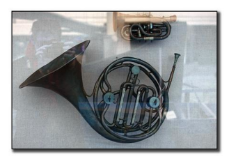

from sklearn.datasets import load_iris
from datetime import datetime
from sklearn import tree
import numpy as np
from fastcore.foundation import *
from fastcore.parallel import *
import random1 Intro
1.1 Who is this for
Data Scientists that want to learn what they need to know to effectively use parallel programming quickly and easily in their projects.
1.2 What questions will post help this answer:
- When I need to run something in parallel, should I use threads or processes?
- How much of a speed up will I actually get?
- What’s the easiest way run something in parallel in python without lots of complicated/annoying boilerplate?
1.3 Inspiration
- The Fastcore library that was created by the fastai(https://www.fast.ai/) team led by Jeremy Howard. It’s a really amazing library and has lots of really powerful features that I use on a daily basis. There’s a parallel module which I will be using for this post.
- Super awesome article on Python Concurrency that was written by Hamel Husain. This is a great post that explains in detail exactly how it all works.
1.4 Why this post?
- This will be application focused. Rather than examples such as a calculating fibonacci numbers, I will use real world examples for comparisons.
- Rather than showing parallel processing from the foundations, we will be showing applications using the fastcore library.
If you want low level and deep understanding you should study Hamel’s post. His article also covers topics I am not covering in this post. If you want a shortcut to get the information needed to apply and use parallel processing for data science this post is ideal as it covers the most critical pieces of information. I recommend reading this post then follow it up with Hamel’s post for a top-down approach.
2 Task Types
There are 2 major types of processes. In order to determine how to parallelize something you need to be able to identify which it is.
CPU Bound: A CPU bound process is one that relies on the CPU. Any kind of extensive calculations are an example of this. A common example is calculating fibonacci numbers
Not CPU Bound: A non CPU bound task is one that isn’t reliant on the CPU. The simplest example is a sleep command. The CPU doesn’t need to do much but it still needs to be monitored.
Let’s look at each and define a task more applicable to data science for each.
2.1 CPU Bound Task
Let’s imagine you are cooking. You are working on cutting your ingredients for a side-dish and also need to cook a separate dish that needs to be stirred constantly/non-stop. How can you speed that up? Well you cannot divide your time because the dish needs to be stirred non-stop. And while you are doing that, the cutting isn’t getting done. You simply can’t just jump back and forth. You could however speed it up by adding a second chef.
This is similar to the trade-off for parallelizing using processes in python. Each chef needs their own tools for their task. This translates to each process needing it’s own data in memory. This means data is often duplicated in memory for each process. But, if your constraint is the CPU this is the way to go!
For our CPU bound task we are going to train a bunch of decision trees. Of course, for basic architectures libraries will generally do the parallelization for you. As you start getting into more custom architectures, ideas, and tweaks that’s when it gets very important to know how to parallelize something.
The crude way to check if something is CPU bound you can start it and look at the utilization of the CPU as it runs. If it is maxed out without parallelization then it’s CPU bound.
Tip
For CPU bound tasks you will want to parallelize using processes
2.1.1 The Data
We are going to use the iris dataset as an example. It’s too small to do a meaningful example so I duplicate it a bunch to make it large enough to whee we can see what the difference in time is.
X, y = load_iris(return_X_y=True)
for i in range(12): X,y = np.concatenate((X,X)),np.concatenate((y,y))
print(f'Our big iris dataset has {X.shape[0]} rows and {X.shape[1]} columns')Our big iris dataset has 614400 rows and 4 columns2.1.2 The Task
We are going to train a tree many times. Of course, we wouldn’t want to train the same tree each time, so we will allow for passing in indexes so that we get a different random subset of the data to train our different trees on
idxs_all = L(L(random.sample(range(0, len(X)), int(len(X)*.8))) for i in range(50))def train_tree(idxs,X=X,y=y):
X_tmp,y_tmp = X[idxs],y[idxs]
clf = tree.DecisionTreeClassifier()
clf = clf.fit(X_tmp, y_tmp)
return clf2.1.3 Comparison
Great so let’s train all our decision trees. I told you above that we should use process for this but I will do all three options so we can compare times and validate that.
- Option 1 - No Parallel: We will just use a standard for loop to do them sequentially.
- Option 2 - Threads: Parallelize using threads
- Option 3 - Processes: Parallelize using processes
As you can see below the right approach to parallel processing for this task (processes) meant less than 1/4 the time to complete the task. But the wrong approach to parallel processing in this task (threads) helped some but not nearly as much. This is a great example of why it’s important to understand how parallel processing works and what the constraint is so you can make smart choices quickly.
Tip
# No Parallel
st = datetime.now()
out = L()
for idxs in idxs_all: out.append(train_tree(idxs))
print(f'Completion time without parallel processing: {datetime.now()-st}')Completion time without parallel processing: 0:00:11.251791# Parallel using Threads
st = datetime.now()
parallel(train_tree, idxs_all, threadpool=True, n_workers=8, progress=False)
print(f'Completion time with thread parallelization: {datetime.now()-st}')Completion time with thread parallelization: 0:00:06.415588# Parallel using Processes
st = datetime.now()
parallel(train_tree, idxs_all, threadpool=False, n_workers=5, progress=False)
print(datetime.now()-st)
print(f'Completion time with process parallelization: {datetime.now()-st}')0:00:03.352727
Completion time with process parallelization: 0:00:03.3530852.2 Non CPU Bound Task
In another cooking analogy, imagine you are making hard boiled eggs and rice. If you are doing 1 after the other how could you speed that up? Well you could:
- Start boiling the water for the egg
- While the water for the egg is heating put the rice and water in the rice cooker and start that
- Change tasks and add the egg to the hot water
- Change tasks and take the rice out when done
- Change tasks and take the egg out when done
This is how parallelizing using threads works in python. Rather than adding a chef you just have 1 chef divide there time and switch between tasks quickly. This isn’t possible if the CPU core is maxed out, but if the constraint is not the CPU it can help a ton. If the CPU is maxed out, multi-tasking won’t actually speed anything up.
The two main examples of non CPU bound tasks are network related tasks (ie Upload/Download) or disk related takes (ie reading or writing files). This is fairly common in data science. If you are doing deep learning on images for example you probably have tens of thousands of images you need to read in in batches every epoch. That will be our example.
Tip
For CPU bound tasks you will want to parallelize using threads
2.2.1 The Data
We are going to use IMAGENETTE_320 and download using fastai’s external data module. We have a list of image paths!
from fastai.vision.all import *path = untar_data(URLs.IMAGENETTE_320)
img_paths = get_image_files(path)
img_paths = [str(o) for o in img_paths]
print(f'Number of images: {len(img_paths)}')
print("Thee examples of what's in this list:")
img_paths[:3]
100.00% [341663744/341663724 00:18<00:00]
Number of images: 13394
Thee examples of what's in this list:['/Users/isaacflath/.fastai/data/imagenette2-320/train/n03394916/ILSVRC2012_val_00046669.JPEG',
'/Users/isaacflath/.fastai/data/imagenette2-320/train/n03394916/n03394916_58454.JPEG',
'/Users/isaacflath/.fastai/data/imagenette2-320/train/n03394916/n03394916_32588.JPEG']2.2.2 The Task
We are going to load in our images for training. We will do it in batches of 128. We aren’t doing a full pipeline with augmentation and all that. All we are doing is reading the images in to see the speed up in that piece. Let’s read in one image and display it to familiarize ourselves with the task.
import cv2
batch_size=128
img = cv2.imread(img_paths[0])
cv2.imshow('image',img)
plt.imshow(img); plt.axis('off'); plt.show()
2.2.3 Comparisons
Now we read the images in for the full dataset in batches of 128. I told you above that we should use threads for this but I will do all three options so we can compare times.
- Option 1 - No Parallel: We will just use a standard for loop to do them sequentially.
- Option 2 - Threads: Parallelize using threads
- Option 3 - Processes: Parallelize using processes
As you can see below the right approach to parallel processing for this task (threads) meant less than 1/3 the time to complete the task. But the wrong approach to parallel processing for this task (processes) means over 3x more time to complete the task. This is a great example of why it’s important to understand how parallel processing works and what the constraint is so you can make smart choices quickly.
# No Parallel
st = datetime.now()
for i in range(int(len(img_paths)/batch_size)):
batch_paths = img_paths[i*batch_size:i*batch_size+batch_size]
batch = L()
for img_path in batch_paths:
batch.append(cv2.imread(img_path))
print(datetime.now()-st)
print(f'Completion time without parallel processing: {datetime.now()-st}')0:00:24.941654
Completion time without parallel processing: 0:00:24.941788# Parallel using Threads
st = datetime.now()
for i in range(int(len(img_paths)/128)):
batch_paths = img_paths[i*128:i*128+128]
parallel(cv2.imread, batch_paths, threadpool=True, n_workers=8, progress=False)
print(datetime.now()-st)
print(f'Completion time with thread parallelization: {datetime.now()-st}')0:00:08.041621
Completion time with thread parallelization: 0:00:08.042516# Parallel using Processes
st = datetime.now()
for i in range(int(len(img_paths)/128)):
batch_paths = img_paths[i*128:i*128+128]
parallel(cv2.imread, batch_paths, threadpool=False, n_workers=8, progress=False)
print(datetime.now()-st)
print(f'Completion time with process parallelization: {datetime.now()-st}')0:01:13.452496
Completion time with process parallelization: 0:01:13.4529663 Processes vs. threads
I’d like a wrap up with a summary of processes vs. threads for data scientists.
Note
This is a section from Hamel’s article. I cannot think of a clearer or more concise way of explaining this so I will just use his words. If you think this is helpful, consider reading that whole article.
If you are downloading lots of files from the internet, consider using threads. This is because most of your time is spent on network I/O, not on the CPU. For example, this article demonstrates a 50% speedup when using threads compared to processes for downloading files.
If you are transforming or cleaning a large dataset, this work is mostly CPU bound so using processes makes sense. The only part of this that isn’t CPU-bound is reading and writing the data to disk.
If you just want to load a bunch of files into memory or write a bunch of files to disk, without really doing any transformations, consider using threads as the work is mostly disk I/O and not CPU bound.
Keep in mind that threads can be more memory efficient than processes because of differences in the way they work. So using lots of processes when you don’t need them can lead to memory bloat.
Most importantly, try avoid having to think about processes and threads where you can and use scientific computing libraries like numpy and write vectorized operations wherever you can. It is always worth being aware of the concurrency tools available in the library or framework you are using (especially numerical computing and other data science libraries) and consider using them when appropriate.